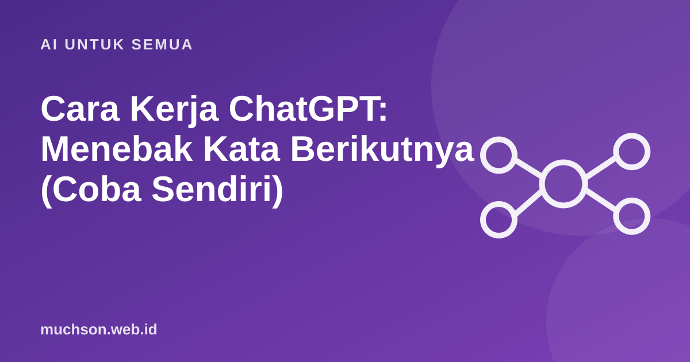

Cara Kerja ChatGPT: Menebak Kata Berikutnya (Coba Sendiri)
ChatGPT terasa seperti lawan bicara yang memahami Anda. Di balik layar, yang terjadi jauh lebih sederhana dalam konsep: model menebak kata berikutnya, lagi dan lagi. Demo di bawah memperlihatkan prinsip itu dalam skala mini.
Oleh Muhammad Muchson Attoyibi··1 menit baca

Menebak kata berikutnya
Model bahasa besar (LLM, large language model) dilatih dengan sangat banyak teks. Dari situ ia belajar peluang: setelah kata-kata tertentu, kata apa yang paling mungkin muncul. Saat menjawab, ia memilih satu kata, menambahkannya, lalu menebak kata berikutnya berdasarkan seluruh teks sejauh ini. Prosesnya berulang sampai jawaban selesai.
Mengapa hasilnya bisa tampak "cerdas"?
Model sungguhan memiliki miliaran parameter yang menyimpan pola dari data pelatihan.
Karena model dilatih pada teks yang sangat banyak, pola yang ditangkapnya meliputi tata bahasa, gaya penulisan, fakta umum, dan cara penalaran yang sering muncul dalam teks. Itu sebabnya jawabannya terasa wajar.
Konsekuensi penting
Catatan
Tahap pelatihan lanjutan, seperti penyesuaian dengan umpan balik manusia, membuat jawaban lebih membantu dan aman. Namun prinsip dasarnya tetap prediksi kata berikutnya.
Tanya jawab
Apakah ChatGPT benar-benar memahami?
Ia menangkap pola bahasa dan pengetahuan dari data dengan sangat baik, tetapi tidak memiliki pemahaman atau kesadaran seperti manusia. Perdebatannya masih berlangsung.
Apa itu token?
Potongan teks yang diproses model, bisa berupa kata utuh, bagian kata, atau tanda baca. Batas panjang percakapan dihitung dalam token.
Mengapa AI kadang menjawab panjang lebar yang tidak perlu?
Itu pola yang dipelajari dari data dan penyesuaian pelatihan. Minta jawaban singkat dengan instruksi yang jelas.
Bagikan:
Muhammad Muchson AttoyibiSoftware Engineer dan Academic Trainer di Malang. Menulis tentang teknologi, belajar, dan hal praktis sehari-hari. Tentang saya